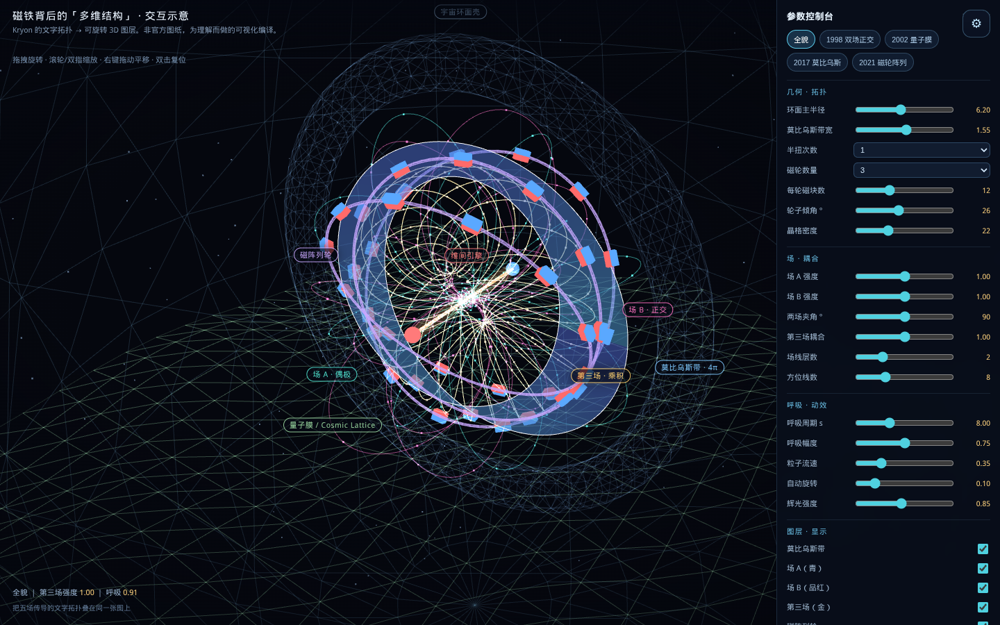
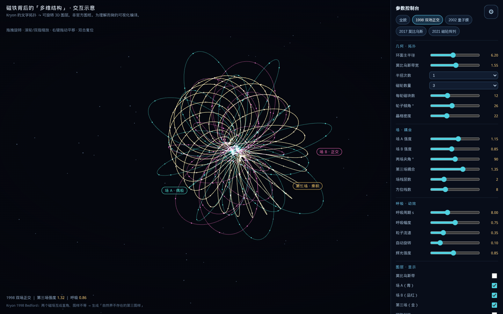
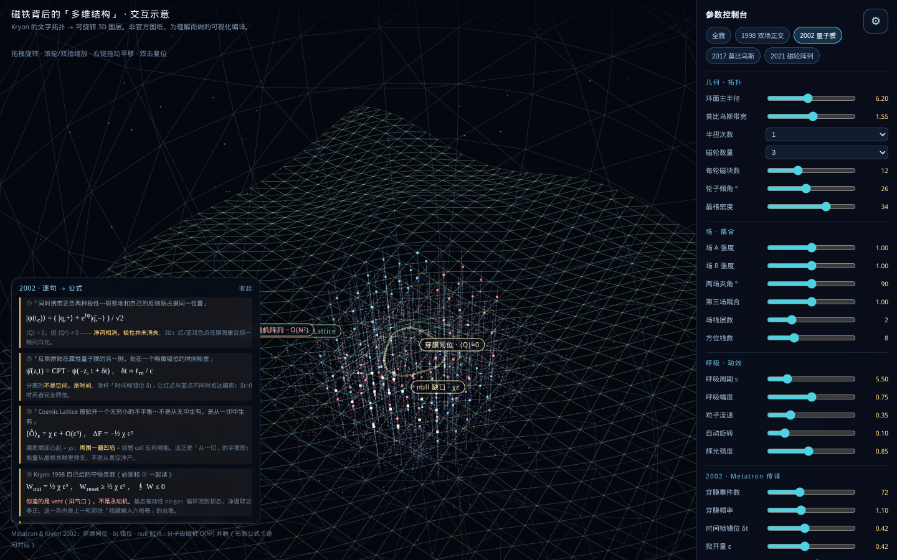

源起老师 2026-11-26 给的元宝九轮问答。核心判断：Kryon 给的是语言拓扑图纸，Bashar 给的是接收天线方向；两套隐喻都指向「改几何而非加能量」，但标准物理在四个不同层面各堵一段——拓扑能改相位，不能改账本。玄学隐喻可作为灵性地图阅读，不能接上发电机。
先说判决，再说为什么——这是整套审计的立场。
以下引文均来自元宝 A1 / A3 / A6 正式回答中转述的传导原文；不把元宝的编译混进引号内。
《现今的问题》先否定「自由能量」一词，再定义来源为「磁」；装置描述为永磁体、多轮、磁阵列互推拉。关键提示：轮子应该是莫比乌斯环，配碟片与永磁体。
《正在来到的发现》（2021）给产品形态：2–3 轮、特定磁阵列、轮接发电机、无电池无电网、手机微型磁轮机、电动车底盘磁轮给超级电容充电；明说这是「尚未被发现的磁阵列模式」。
逻辑链三条：静态力免费 → 换几何绕开磁平衡锁死 → 从磁这个「无需刷新的场」转化而非凭空创造。
他说磁铁吸推的劲儿是真有，但你拿两个大力士掰不开同极磁铁去问「这股劲能顶多久」——答案是一直顶。可惜有劲 ≠ 有用功，推过去多少，掰回来就得还多少。
普通轮子转到某个角度就锁住，他说：别加磁铁，把路改成莫比乌斯带——去程和回程不是同一条道，账面上就不抵消了。
听着很聪明。问题是：他把「绕一圈回来样子变了」当成「绕一圈白赚了钱」，这两件事在物理里不是一回事。
特斯拉那场：不是发电机而是接收天线——行星周长 ÷ 光速 = 7.5 Hz；在该频率振动的发射塔产生波长等于地球直径的波，赤道↔两极来回反射，激活地球电磁场。
另一次：自由能源 50 年内，路径是三相性（物质/反物质/暗物质，正能/负能/暗能量）+ 跟随兴奋带来的同步性；明说「不能泄露秘密，必须亲自经历摸索」。
1997 年：圆锥天线，斐波那契比例、顶角 33.9°（φ），或高 33.3 / 底周长 33.3 → 顶角 19.5°；称「从以太到物理的翻译装置」，无运动部件。
他把问题换了：机器不生产能量，机器是收音机。地球电磁场本来就在那儿震，你把天线调到它的频率，能量自己流进来——所以不是磁铁有存货，是「场没关过」。
他会给你一个圆锥角度让你自己拿材料试，但不给图纸，理由是「不能毁掉你们的惊喜」。
所以把 Bashar 的话拿来给磁动机背书，其实引错了人——他讲的是调谐，不是转子。
把 Kryon 的直觉翻译成标准对象后逐条推——形式体系自洽，但每条通往永动的路都被独立定理堵住。
静电/静磁有势，H 是标势负梯度，U 是态函数。恰当微分形式沿闭链积分为零，与磁铁强度、阵列复杂度无关。τ(θ) 在 30° 区间可以极陡，但力 ≠ 功。
Johnson US4151431、Perendev、Bedini 纯永磁版全死在此引理。
磁铁的吸力是真的，但它是「借」的。吸过去拿到多少，掰回来就得还多少，绕一圈回到原点，账面必然清零。
那些宣称「不对称排列就能一直转」的，等于说「我走了一条环路，回到出发点却多了一百块」——问题不在磁铁不努力，在环路本身就是闭合的。
普通转子位形空间 S¹，U 必须 2π 周期单值。莫比乌斯转子改成以磁矩方向为纤维的非平凡 S¹-丛，绕一周纤维反号。微分形式积分要求流形可定向，莫比乌斯带不可定向 ⇒ 必须切回可定向的双覆盖（绕两圈）才谈得上功。
莫比乌斯没消灭闭合回路，只把闭合回路拉长一倍。每 2π 看似有净功，那点「净」是从下一个 2π 预支的。
他说「回程走另一面，所以不抵消」——对，走完第一圈你确实站到了「反面」，账还没结。
但你得再走一圈才能回到原来那一面。第二圈一起结，总账还是零。他只是把结账日从月底推到了两个月后。
静态永磁 + 静电 + 重力构成的固定构型，在无源区满足 ∇²U = 0（拉普拉斯），U 不可能有局部极小，只有鞍点。翻边点需要「沿轨道鞍、垂直方向稳」的组合——纯永磁搭不出这个被动稳定门。Geim 1999 磁悬浮青蛙实验是正面写照：突破 Earnshaw 要抗磁质（χ<0）、超导或主动反馈，三者都不免费。
你希望磁铁走到某处「啪」自己翻面，还得翻得稳、不跑偏。但纯磁铁排出的场没有稳定的坑——那儿不是卡住就是抖出去。
真要它乖乖翻，就得有东西推一把；那一把就是要记账的输入功。他说「无需刷新、无需外部电源」，等于把这个推手从账本上抹掉了。
| 隐藏输入 | 典型伪装 |
|---|---|
| 时变外场 | 底座里藏线圈 + 霍尔 + 单片机 |
| 退磁 | 磁体几年内掉 Br，把库存能当期权卖 |
| 屏蔽件运动 | 「磁闸」本身被转子推着走，reset 要功 |
| 重力偏置 | 轮子其实微微下坡 / 偏心 |
| 环境梯度 | 靠地磁 / 铁构件旁，取的是外部 |
| 测量错觉 | 钳形表测非正弦、电池恢复效应、热漂移 |
磁矩翻转 180° 穿越磁晶各向异性能垒（钕铁硼约 5 MJ/m³）。被动翻从转子动能扣，主动翻从场能扣，两种都进总 U，已在引理 1 的 ∮dU=0 中结算。不能同时算作「免费换极红利」又算作「系统内部状态」——这是复式记账里最常见的偷钱。
把磁铁翻个面不是白翻的，磁畴内部要耗能，就像你反复折一根铁丝会发热一样。
所有「成功」的磁动机拆开后都能在上表六格里找到那个偷偷塞进去的电源。Perendev 卖磁电机给汽车供能，2010 年以诈骗罪判 5 年 9 个月；Howard Johnson patent 拿到了，但美国专利局不要求演示可运行。
①「磁阵列稳定传矩、只需偶尔给轴承加油」=磁齿轮：磁场调制型磁齿轮满足极对数匹配条件时输出稳定转矩，Magnomatics 500 kW 海上风电样机跑过、国家电投 132 kW 在空冷岛在用——只是输入轴这个前提被吞掉了。
②「2π 不闭合、4π 才闭合」=拓扑物理日常：自旋 1/2 粒子 4π 回原态、AB 效应矢势绕不可缩回路累积规范相位、贝里相位在参数空间闭链取几何相。
一句话：莫比乌斯能改相位，不能改账本。
「没说过」本身有信息量：他选的词都落在当前物理还没封口的地方。
| 来源 | 供能落点 | 碰 ZPE 吗 |
|---|---|---|
| Tesla / Bashar | 舒曼共振 7.5 Hz + 以太 + φ 几何天线 | 没直说；「以太」是 ZPE 的 19 世纪祖先 |
| Kryon | 永磁静态场 + 暗物质 / 多维量子 | 一次都没碰 |
| Bearden / Bedini 派 | 电磁脉冲坍缩耦合真空零点 | 核心卖点就是它 |
| 民间磁动机圈 | 常把上面三家缝一起 | ZPE 当万能补丁 |
核到的 Kryon 原文里没有 zero point energy，也没有 Casimir / 真空涨落 / 量子泡沫。三个替代词：①磁本身（2021「磁力就是答案」）；②暗物质 / 多维量子（2022《未来500年的物理》，明说「非线性系统，属于多维物理」）；③原初宇宙隔膜残留（拓扑缺陷语言）。
慈善地替他补上 ZPE 也救不活：基态被动性 no-go——初态为 |0⟩、周期末哈密顿量回原形的任意场+控制器复合系统，净可提取功 ≤ 0。五个合法漏洞（非平衡泵浦、边界材料态变、热/化学梯度、测量信息资源、非循环末态）与隐藏输入六格表几乎一一对应，每一个都违反他「无需刷新、无需外部电源、无需燃料」。
他连「真空涨落」这个词都没用。别人拿零点能当万能补丁，他偏说「是磁，是暗物质，是多维」——这些词恰好都在当前物理还没被封死的地方，证伪成本高得多。作为隐喻工程，段位很高。
但就算你替他改成「其实耦合了真空能」，也救不活那台机器：卡西米尔板吸在一起那一哆嗦是真的，你花的拉开功至少一样多。跟磁铁吸过去再掰回来是同一本账。
物理学家没有「探测到暗能量实体」，探测到的是 Ia 超新星加速膨胀、Planck CMB 第三峰空间平坦、DESI DR2 的 BAO 膨胀史。「暗能量」是标签，底下能塞 Λ、动力学标量场、修改引力、系统误差四种东西。DESI DR2 偏好 w₀>−1、wₐ<0 约 3σ~3.8σ；Son 2025 修正低 z age-bias 后结论反转回 ΛCDM 甚至可能减速——所以「物理学家可能错了」在 2025–26 是常规操作。
慈善化编译写作 ℒ ⊃ −¼ B_F(φ)F_μνF^μν + ½(∂φ)² − V(φ)。但 Contopoulos & Basilakos 2007 实测拟合给 Ω_B≈0.03、Ω_Q≈0.71、w≈−0.8：磁能最多配角。ADD/RS 额外维约束下，光子被限制在膜上，漏进 bulk 的主要是引力子；短距离牛顿反平方律已压到 <0.045 mm。
「科学家探到的暗能量是误读」——这句在今天的宇宙学争议里不算离谱，标准模型确实吃不下所有数据。
但「根因是磁、来自多维」目前还只是一句口号。真要做成物理，必须写成拉氏量里的一个耦合项，并且解释：如果磁能漏到额外维，为什么短距离引力实验、LHC、天体观测都没看见？已有拟合里磁能只分到 3%，剩下 71% 还得靠真正的暗能量顶着。
Metatron 合传里有一句：「确实会有一些人能在宏观层面发现它，但这并不会十分有效率。」翻成大白话就是——你们会搭出会转的玩意儿，但别指望它当电站用。他用灵性语言提前说了 ∮τdθ=0。
先钉死规矩：单一异常一律不算验证。要算支持，至少两张票在同一参数象限同时亮、第三张不反对。
| # | 实验 / 探针 | 看到什么才算赢 | 窗口 |
|---|---|---|---|
| 🥇 1 | 桌面短程第五力：Eöt-Wash 下一代扭秤 / MORRIS 磁悬浮谐振子 / 光镊冷原子阵列 | 三家在 λ=10 μm–1 mm 同时看到 α~10⁻³–10⁻⁴ 的 Yukawa 偏离，且同一 (ϕ, B_F(φ)) 拉氏量拟合；若都零结果到 α<10⁻⁵，ADD 大额外维 R~0.045 mm 那一支死 | 2027–2030 |
| 🥈 2 | 基本常数漂移：光钟网络 + 高电荷态离子（Cf¹⁵⁺/Cf¹⁷⁺ K_α=47/−43.5）、钍-229 核钟、requench dysprosium | α̇/α 或 μ̇/μ 出现与 ϕ̇ 一致的漂移或年调制；原子钟/离子探针推到 10⁻²⁰/yr 量级 | 2027–2031 |
| 🥉 3 | 宇宙一致性与偏振：DESI / Euclid 动态暗能量、CMB 双折射、LiteBIRT / SKA | 多探针在同一 w(z) 参数象限一致偏离 ΛCDM，且系统误差处理不把它抹平 | 2028–2031 |
| 4 | 高能直产：LHC / FASER2 / MATHUSLA / SHiP 找长寿命 KK 模或暗光子 | 高风险高回报；零结果只砍参数空间，不算反证整个假说 | 2029–2031 |
MORRIS 用超导阱悬浮一颗亚毫米永磁球，Meissner 被动悬浮、Q>10⁶、力灵敏度 10⁻¹⁶ N/√Hz，专门扫 λ~1 mm 的 Yukawa 第五力。Kryon 说「磁铁是那个一直在你面前的探针」——MORRIS 字面把一块磁铁悬起来当探针，只不过测的不是发电，是 1/r² 在毫米处有没有悄悄弯掉。
装置：莫比乌斯带状转子（3D 打印骨架 + 48 块 N42 薄片，半扭 180°）、同轴双覆盖、陶瓷轴承、真空罩；轴上不接任何电线/屏蔽件/供电，测速用外部激光转速表穿窗。
三条同时满足才算 Kryon 对：①抽真空后给已知 ω₀ 脱手，τ > 100× 同惯量裸转子对照；②轴上加磁滞制动器做可调负载，稳态连续 72 小时 P_out > 0 且由外部量热计独立核对；③前后用 BH 曲线追踪仪测每块磁体 Br 与 Hcj，退磁 < 0.5%。
别吵，搭一台干净的：真空里让轮子转，看它能转多久；接上真负载，看能带多少；转完把磁铁拿去测，看有没有偷偷掉磁。
预判：τ 会略长于裸转子（磁悬浮减摩是真的），但一加负载几分钟到几小时就停，停下时磁体 Br 掉了一点点——那点掉的量恰好等于输出过的焦耳数 ±5%。YouTube 那些演示全不过第 2、3 条。沉默本身就是数据。
最重要的一句：Kryon / Lee Carroll 官方从未发布过一张「磁铁背后的多维结构」工程图或亲绘示意图——全是语言拓扑。别把社区二创当第一级引。
| 等级 | 链接 | 内容 |
|---|---|---|
| 一级 · 官网原文 | kryon.com/k_29.html | 1998 Bedford《Cosmic Lattice 与设计磁场》：两个场互成直角、强度图样不等 → 生成第三图样（乘积）；「你造的是 vent，不是永动机」 |
| 一级 | k_chanelnewhamp02.html | 2002 Bedford Metatron 合传：穿膜同位、反物质在膜另一侧错位时间帧、极小磁机海量并联、合力>各部分之和；页角相机图标是讲座照片集，非结构图 |
| 一级 | k_chanelShasta05.html | 2003 Mount Shasta《Invisible Things》：磁极之间是「永远开着的维间引擎」；附光闭锁室石头感光板思想实验 |
| 一级 | k_channel21_Discoveries.html | 2021《Coming Discoveries》：2–3 轮磁阵列、无电池无电网，「尚未被发现的模式」但没给图纸 |
| 一级 | k_channel17_montreal.html · k_channel14_SANANTONIO-14.html | 2017 莫比乌斯环面 / 2014 相关传导 |
| 二级 · 官方讲座/译文 | Golden Age of Gaia 2022 · 中文译本 | 《最好的发明不是高科技》；中文社区忠实译本 |
| 三级 · 社区二创 | KryonEngine.org | 「中心磁 + 螺旋导轨 + 周边磁」图纸是粉丝反向工程，站方自己写「不确认也不否认任何原型机存在」——不是 Kryon 给的图纸 |
| Bashar 原文 | 巴夏 · 特斯拉与自由能源（中译） · 1997 圆锥传导 | 7.5 Hz 接收天线、33.9°/19.5° 圆锥、以太→物理翻译装置 |
| 实证审计 | ClaimByClaim 磁动机审计 · Perendev 案 | 逐格勾隐藏输入；Perendev 2010 判 5 年 9 个月诈骗 |
一级 = 语言原文（无图）；二级 = 官方讲座/忠实译文（可能有现场照片，非工程图）；三级 = 粉丝图纸/二创。把三级当一级引，是这条链路最常见的加料。
元宝最终产物是从对话源码重放的（artifact 直链返回腾讯文档预览壳页），已在本地真渲染核验。深色底 + WebGL，left 可拖动旋转 / 滚轮缩放，右侧浮窗 24 滑杆，v2 左下公式卡逐句对应 2002 Metatron 传导。
5 个预设：全貌 / 1998 双场正交 / 2002 量子膜 / 2017 莫比乌斯 / 2021 磁轮阵列。Three.js r128 内联，单文件离线可开，约 637 KB。
Kryon多维磁场交互示意图_v1.html
打开 v1 →在 v1 基础上补 2002 专属几何：穿膜同位对、null 缺口、分子级磁机阵列；公式卡含 ⟨Q⟩=0/⟨Q²⟩≠0、CPT 时间错位 δt、χε 掀开、即死条款 ∮W≤0、O(N²) 超线性、Δ_unseen 交叉项。约 649 KB。
Kryon多维磁场交互示意图_v2.html
打开 v2 →


这是为看懂文字拓扑做的教学编译，不是 Kryon 发布的图纸；图里的流动只是可视化，不表示任何净能量输出。公式卡里的「即死条款」：若 2030 年 MORRIS 报 α<10⁻⁵、核钟报 α̇/α<10⁻²¹，本编译即死。
| 文件 | 内容 | 字节 |
|---|---|---|
| Kryon_Bashar归档/元宝对话全文_Kryon_Bashar磁动机.md | 9 轮正式回答（剔除 think/toolCall） | 97,660 |
| Kryon_Bashar归档/Kryon多维磁场交互示意图_v1.html | 五图层版，Three.js 内联 | 637,059 |
| Kryon_Bashar归档/Kryon多维磁场交互示意图_v2.html | 24 滑杆 + 6 公式版 | 648,874 |
| Kryon_Bashar归档/重建记录_A8_v1源码块.md | v1 模板与 patch 脚本逐条留痕 | 45,870 |
| Kryon_Bashar归档/重建记录_A9_v2补丁.md | v2 全部补丁与验证脚本 | 23,477 |
| Kryon_Bashar归档/预览图/*.png | 元宝原版三张渲染截图 | 1,974,667 |